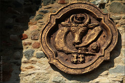

Cetatea Neamț
Cetatea Neamț (cunoscută impropriu sub titulatura Cetatea Neamțului) este o cetate medievală din Moldova, aflată la marginea de nord-vest a orașului Târgu Neamț (în nord-estul României). Ea se află localizată pe stânca Timuș de pe Culmii Pleșului (numită și Dealul Cetății), la o altitudine de 480 m și la o înălțime de 80 m față de nivelul apei Neamțului. De aici, străjuia valea Moldovei și a Siretului, ca și drumul care trecea peste munte în Transilvania.
Cetatea Neamț făcea parte din sistemul de fortificații construit în Moldova la sfârșitul secolului al XIV-lea, în momentul apariției pericolului otoman. Sistemul de fortificații medievale cuprindea așezări fortificate (curți domnești, mănăstiri cu ziduri înalte, precum și cetăți de importanță strategică) în scop de apărare, întărite cu ziduri de piatră, valuri de pământ sau având șanțuri adânci.
Cetatea a fost construită la sfârșitul secolului al XIV-lea de Petru I, a fost fortificată în secolul al XV-lea de Ștefan cel Mare și distrusă în secolul al XVIII-lea (1718) din ordinul domnitorului Mihai Racoviță.
Cetatea Neamț a fost inclusă pe Lista monumentelor istorice din județul Neamț din anul 2004, având codul de clasificare NT-II-m-A-10707.
Cetatea Neamț si epoca lui Ștefan cel Mare
Domnitorul Ștefan cel Mare (1457-1504) a înțeles cel mai bine necesitățile construirii de clădiri fortificate pentru a apăra Principatul Moldovei de atacurile turcilor, tătarilor, ungurilor sau polonilor. El a construit primele mănăstiri fortificate din Moldova și a întărit cetățile existente. Considerând că Cetatea Neamț nu este suficient întărită pentru a rezista atacurilor inamicilor Moldovei, în răgazul dintre Bătălia de la Podul Înalt (ianuarie 1475) și Bătălia de la Valea Albă (26 iulie 1476) el a poruncit supraînălțarea zidurilor cetății cu circa 6-7 m și construirea de creneluri și ferestre înguste, prin care apărătorii cetății puteau să supravegheze și să lovească dușmanii. Pe latura de nord a fortului mușatin s-a construit un zid flancat de patru bastioane semicirculare cu ziduri groase și rezistente, cu înălțimi variabile, de până la 30 de metri. Acest zid a încadrat o curte exterioară.
Pentru a evita apropierea dușmanilor de zidurile cetății, Ștefan cel Mare a dispus săparea unui șanț de apărare mult mai adânc și mai larg decât cel anterior, în partea de nord și nord-est a fortului. În cetate se pătrundea printr-un pod de acces arcuit cu o parte fixă și o alta mobilă, sprijinit pe 11 piloni de piatră de formă prismatică. Partea mobilă se afla pe porțiunea de pod dintre ultimul pilon și zidul bastionului și se putea ridica în caz de primejdie, printr-un sistem de scripeți, dar odată trecut de ea existau două capcane cu trape, cunoscute și sub numele de "curse de șobolani".
În anul 1476, după ce învinsese oștile Moldovei în Bătălia de la Valea Albă, sultanul otoman Mahomed al II-lea ("Cuceritorul") l-a forțat pe voievodul Moldovei, Ștefan cel Mare, să se îndrepte spre Cetatea Neamț aflată la o distanță de 27 km de locul bătăliei. Conform legendei, mama lui Ștefan a refuzat să-l lase să intre în cetate și l-a sfătuit să se îndrepte spre nordul țării, unde să-și strângă o nouă oaste.
În timp ce Ștefan cel Mare se afla în nordul țării pentru a-și regrupa oștile, Mahomed al II-lea a asediat timp de opt zile Cetatea Neamț presupunând că domnitorul se refugiase în acea fortăreață sau că măcar își deținea acolo averile. La acel moment, pârcălab al cetății era bătrânul Arbore, care se pare că a căzut sub lovitura unei ghiulele turcești. În cetate se mai aflau și o parte din prizonierii turci din Bătălia de la Podul Înalt (1475), pe care domnitorul i-a folosit la lucrările de fortificare.
Imagini de la Cetatea Neamț
Descriere
Cetatea Neamț este construită din piatră de râu (folosită atât ca elevație, cât și ca umplutură a zidurilor), din piatra de carieră (folosită la arcade, pervazuri, piloni și contraforți) și rocă de gresie verzuie. Între cetate și restul platoului se află un șanț de apărare (pe latura de nord). În cetate se pătrundea pe o poartă ("poarta mușatină") aflată pe la mijlocul zidului nordic.
Fortul mușatin are forma unui patrulater cu laturi inegale; latura de nord are 38,50 m, latura de sud 37,50 m, latura de est 47 m și latura de vest 40 m. Zidurile sunt groase de aproape 3 m și aveau inițial o înălțime de circa 12-15 m, fiind susținute și consolidate în exterior de 18 contraforți puternici de formă prismatică, care corespund pe direcția zidurilor interioare. În cele patru colțuri ale fortului mușatin se află turnuri de apărare, care nu sunt plasate în exteriorul zidurilor, ca la cetățile Suceava și Șcheia construite în aceeași perioadă, ci încadrate direct în scheletul de ziduri.
În mijlocul fortului se afla o curte interioară largă, înconjurată de încăperi cu diferite întrebuințări:
- pe latura de est se aflau închisoarea, monetăria, camera de provizii și cuhnea (bucătăria) - la parter și demisol, "neagra temniță", paraclisul "Sf. Nicolae", cameră de locuit, camera pârcălabului și camera domnițelor - la etaj
- pe latura de vest se aflau sala armelor - la demisol și parter, sala de sfat și judecată, o sală de trecere, un iatac și o cameră de taină - la etaj
- pe latura de sud se afla un lapidarium - la demisol și parter și o terasă - la etaj
- pe latura de nord nu existau încăperi, aici aflându-se doar zidul de incintă

{kind=link}